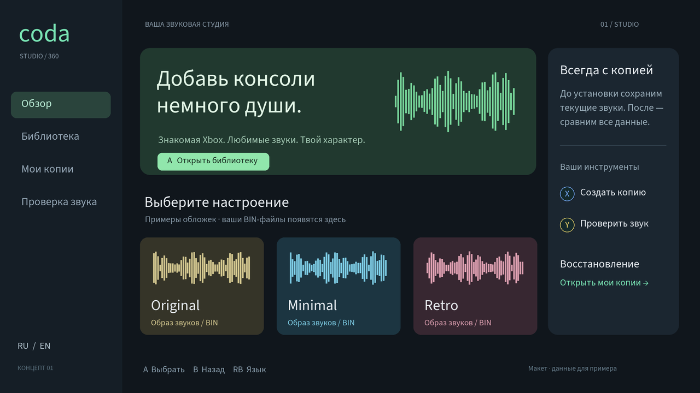
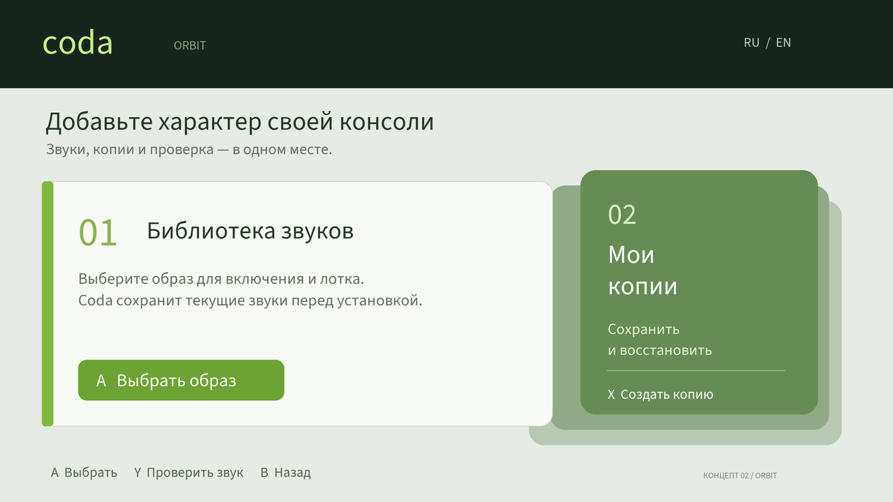
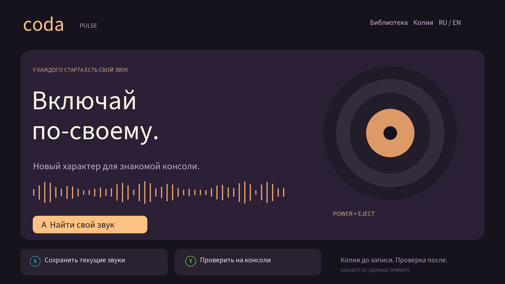

Coda / три направления
Концепты интерфейса для Xbox 360. Это макеты, а не выбранная тема приложения.

Библиотека в центре: обложки, настроение, боковая навигация и отдельная зона резервных копий.

Отсылка к интерфейсу Xbox 360: светлая палитра, зелёный акцент и крупные панели.

Музыкальный характер: крупная типографика, винил, выразительная волна и тёплый акцент.
Во всех вариантах остаются установка BIN, проверенная копия до стирания, восстановление и тест звуков. Иконки A/B/X/Y сохраняют цвета геймпада.